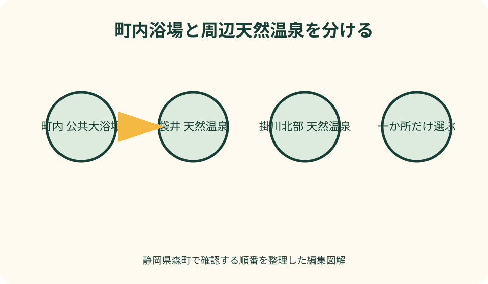
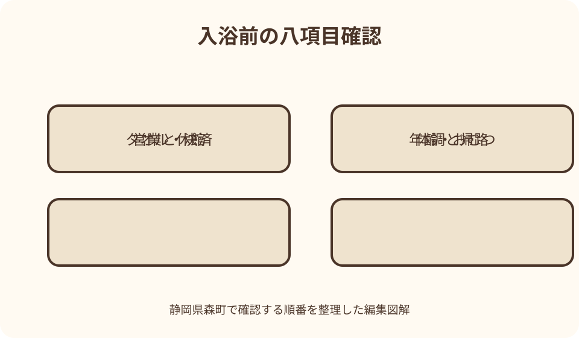

森町観光・入浴｜最終確認 2026-08-10
静岡県森町の温泉・日帰り入浴を探す現実的な方法｜町内浴場と周辺市を分ける
静岡県森町で『温泉に入りたい』と検索しても、町内に温泉旅館や日帰り温泉が多数並ぶわけではありません。町内で一般利用できる実在の入浴先として、森町保健福祉センター1階の望月プラザ『もりの湯』がありますが、町公式は温泉ではなく大浴場・入浴施設として案内しています。天然温泉を主目的にするなら、袋井市の袋井温泉和の湯、掛川市のならここの湯など周辺市の運営者公式を確認し、観光地からの距離ではなく、自宅や宿への帰路に合う一か所を選びます。

編集イラスト森町は温泉地ではなく、町内浴場を一件ずつ確認する
森町観光のページを見ても、温泉街や多数の温泉宿が並ぶ地域ではありません。検索語の『森の湯』を森町の温泉群と誤認しないことが出発点です。
町内には望月プラザもりの湯という一般利用可能な大浴場があります。名称に『湯』があっても、町公式が温泉と表示しているとは限りません。
コテージや宿に浴室があっても、宿泊者用設備と一般の日帰り入浴は別です。外来入浴できると施設が明示しない限り候補へ加えません。
本記事は筆者の入浴体験や効能評価ではありません。2026年8月10日に確認した町と運営者の公式情報から、利用前の判断を整理しています。
町内の望月プラザもりの湯を最初に確認する
望月プラザもりの湯は、森町保健福祉センター1階にある大浴場です。町公式に所在地、料金、営業時間、休館、利用できない条件が掲載されています。
サウナは町ページ確認時に閉鎖中と明記されています。浴場が開いていることを、サウナや全設備が使える意味へ広げません。
選挙、設備、行事などで臨時休業が告知される場合があります。通常休館だけを覚えず、当日の臨時情報と電話確認を行います。
町内者と町外者で料金区分があり、年齢区分もあります。本記事へ価格を固定せず、訪問日の公式表を受付前に確認します。
もりの湯を温泉と断定しない理由
町公式は望月プラザをジャクジー付き大浴場として紹介しています。温泉源、泉質、温泉法上の表示を確認できないため、本記事では公共入浴施設と表現します。
『温泉のように広い風呂』という利用者の感想と、天然温泉である事実は別です。第三者ブログの表現を施設属性の根拠にしません。
温泉であることを旅の主目的にする人は、運営者が天然温泉や源泉を明示する周辺市施設を選びます。町内入浴は距離と手軽さの候補です。
泉質や効能を記事から期待せず、入浴自体の可否を体調と施設規則で判断します。治療目的の入浴を勧める内容ではありません。
入浴できない条件を家族全員分確認する
もりの湯の町公式には、年齢、紙おむつ、皮膚・伝染性疾患、飲酒、入れ墨等に関する利用不可条件があります。同行者ごとに読みます。
乳幼児を連れて受付へ行ってから交代入浴を決めると、待つ場所や大人の分担に困ります。入浴できない子がいる場合は事前に代案を決めます。
紙おむつを外せば利用できるという自己判断をせず、施設が示す条件を守ります。大人の介助用品についても同様に電話で確認します。
タトゥーシール等も禁止条件へ含まれる場合があります。小ささや隠せることを理由に入館し、現地で交渉しません。
観光後は閉館ではなく受付・退出から逆算する
浴場には最終受付と浴室退出の時刻が設けられる場合があります。施設全体の閉館時刻へ着けば十分とは考えません。
小國神社の混雑、アクティ森の体験、食事の待ち時間で遅れたら、入浴時間を削って駆け込まず、電話で受付可否を確認します。
着替え、洗髪、乾燥、子どもの支度、会計、駐車場への移動を含めます。浴槽に入る時間だけを所要として計算しません。
間に合わなければ宿の浴室、帰宅後、周辺市の営業確認済み施設のどれかへ変更します。夜遅く遠い温泉を追加しません。
袋井方面の帰路なら和の湯を当事者公式で確認する
袋井温泉和の湯は、袋井市の日帰り天然温泉として運営者公式があります。森町から南へ帰る人が帰路上の候補として比較できます。
料金、営業時間、休館、販売品、レストラン、駐車は公式の利用案内と最新ニュースを確認します。過去の観光サイトの時刻を使いません。
公式には年齢やおむつ、刺青・タトゥー、泥酔などの禁止事項が掲載されています。町内もりの湯と同じ条件だと思わず読み直します。
袋井駅やバス停からの案内も公式にありますが、大人の徒歩時間を子連れや荷物持ちへ流用しません。帰りの交通も調べます。
掛川北部へ進むならならここの湯を比較する
森の都温泉ならここの湯は掛川市居尻にあり、運営者と掛川市観光公式で天然温泉、入浴、休憩、食事等が案内されています。
森掛川ICに近い印象だけで選ばず、出発地、山道、日没、帰宅方向を地図で見ます。森町南部からは袋井方面より遠回りになる場合があります。
休館は祝日による振替や季節営業で変わる可能性があります。定例休館を覚えるだけでなく、訪問日のカレンダーを確認します。
乳幼児やおむつ使用者には特定日時の案内がある場合があります。通常時間に入れると推測せず、運営者へ当日条件を聞きます。
周辺市候補は距離・方向・閉館の三軸で選ぶ
地図上で最短の施設が、帰宅方向に合うとは限りません。森町から自宅・宿までの全経路へ温泉を一か所置き、往復を避けます。
距離には観光地から施設、施設から帰宅先の両方を含めます。山間道路、渋滞、駐車、徒歩を直線距離へ置き換えません。
方向は袋井・磐田方面、掛川方面、森町内に残る場合で分けます。同行者が次に向かう場所を地図へ入れてから候補を選びます。
閉館だけでなく最終受付、食事の注文終了、帰りの列車やバスを見ます。すべて成立しなければ入浴をやめます。

子連れは年齢・おむつ・大人の分担を先に決める
施設ごとに乳幼児の年齢、おむつ、異性浴場への入場年齢などが異なります。兄弟のうち一人だけ入れない場合も想定します。
大人一人で複数の子どもを洗い、着替えさせられるかを考えます。浴場内で子どもだけを待たせる計画にはしません。
交代入浴する場合は、入浴しない大人と子どもが待てる場所、利用料、飲食、閉館を施設へ確認します。ロビーを託児場所にしません。
走る、潜る、大声を出す、浴槽縁で遊ぶ行動を大人が止めます。家族向け施設という紹介を安全保証と受け取りません。
タオル・石けん・ロッカー・決済を個別に聞く
もりの湯はタオル販売の案内がありますが、在庫を保証しません。バスタオル、フェイスタオルを持参するか販売・貸出を確認します。
シャンプー、ボディーソープ、ドライヤー、化粧品は施設ごとに違います。写真や過去投稿から備付けを推測しません。
ロッカーは鍵、料金、返却式、貴重品サイズを確認します。車内へ財布や端末を見える状態で残す方法も避けます。
現金、カード、コード決済の対応は受付と食事処で異なる場合があります。小銭だけ、携帯だけに頼らず公式を確認します。
服装と荷物は観光用から入浴用へ切り替える
着替え、下着、濡れ物袋、くし、スキンケア、子どもの予備服を分けた袋へ入れます。キャンプ用品の底から探す荷造りにしません。
紅葉や川辺で濡れた靴、泥の付いた服は、施設入口での扱いを確認します。脱衣所へ大量の屋外荷物を持ち込みません。
貴重品、薬、眼鏡、補聴器、医療機器は水濡れと紛失を防ぐ方法を決めます。施設スタッフへ保管相談が必要な場合があります。
入浴後に冷える季節は上着、夏は水分を用意します。温まることを体調回復の治療として期待しません。
車利用は入浴後の眠気と飲酒運転を避ける
入浴後に眠気やだるさを感じたら、すぐ運転せず安全な場所で休みます。閉館後に駐車場へ残れるとは限らないため施設へ相談します。
食事処で酒類を注文する場合、運転者は飲みません。少量、時間を空けた、入浴したという理由で運転可能とは判断しません。
同行者が代わりに運転する計画は、免許、保険、体調を事前に確認します。代行やタクシーも当日必ず来るとは保証されません。
山間部のならここの湯方面では、暗さ、雨、落石や道路規制を確認します。入浴のために不慣れな細道を近道として選びません。
車なしは浴場への往路より帰りを先に調べる
森町内もりの湯へは、森町公式の公共交通ページから鉄道、バス、タクシーを確認します。最寄りから歩けるかを荷物込みで見ます。
和の湯は袋井駅やバス停からの公式アクセス、ならここの湯は掛川方面のバス案内があります。運行日と帰りの便を運行主体で確定します。
最終受付より帰りの最終便が早い場合、入浴時間を縮めて駆け込まず、より早い時間へ変更するか利用をやめます。
入浴後に濡れた髪、子ども、荷物を抱えて長く歩く負担も計算します。タクシー利用は配車と動物・大型荷物等の条件を事前に聞きます。
小國神社・横丁の後は町内か南の帰路を選ぶ
小國神社とことまち横丁の後、森町内で帰り支度を整えるならもりの湯を候補にし、休館と利用条件を確認します。
袋井や磐田方面へ帰るなら和の湯が経路に合うか比較します。神社からの通常所要を保証せず、渋滞と閉館を地図で更新します。
掛川方面へ帰るからといって、ならここの湯が必ず近道になるとは限りません。山間部へ北上する経路と自宅方向を比較します。
紅葉期や祭事で参拝が遅れたら、温泉を旅程から外します。参拝の混雑を取り戻そうと急いで運転しません。
アクティ森・キャンプ後は汚れと受付条件を伝える
アクティ森の体験やキャンプ後は、泥、汗、川遊びの濡れをそのまま浴場へ持ち込まず、施設の入館ルールを確認します。
キャンプ場のシャワーやコテージ浴室が使える場合、外部温泉へ移動する必要があるか再考します。宿泊者設備は予約先へ確認します。
ならここの湯は同じ掛川北部の山間施設でも、アクティ森からの道路と所要を当日地図で確かめます。近隣名称だけで隣接と判断しません。
疲労が強い、雨具やキャンプ用品が多い、子どもが眠い場合は、外部入浴をやめ、宿や帰宅後へ切り替えます。
体調・飲酒・食後は入浴しない判断を持つ
発熱、感染症の疑い、皮膚状態、けが、強い疲れなどがある時は、施設の利用条件を確認し、無理に入浴しません。
持病、妊娠、高齢、服薬中の入浴可否は、必要に応じて主治医等へ相談します。本記事は健康状態から入浴を許可しません。
深酒や泥酔は複数施設で禁止されています。飲酒後に汗を流せば酒が抜けるという考えで入浴・運転をしません。
食後すぐ、空腹、脱水など本人が不調を感じる場合も中止します。水分を取れば必ず安全になるという保証はありません。
休館・満員・入浴不可時は三つの代案へ切り替える
第一は、宿泊先または自宅の浴室へ戻ることです。観光地の近くで必ず入浴する必要はなく、最も確実な代案です。
第二は、帰路上の別施設へ電話確認して移ることです。営業、受付、年齢条件、混雑、交通が成立する時だけ選びます。
第三は、温かいタオル等で体を整えて入浴を翌日に延ばすことです。公共場所での着替えや洗身は施設規則を守ります。
満員や利用不可を入口で知っても、スタッフへ例外利用を求めません。家族の一部だけ入るかも含め、全員が納得して代案を選びます。

入浴後の荷物・連絡・運転を出発前に整える
脱衣所へ持ち込む袋と車内へ残す袋を分け、貴重品、濡れたタオル、着替え、薬、子どもの用品が混ざらないようにします。ロッカー寸法や利用方法は施設へ確認します。
家族が男女別の浴室へ分かれる場合、退出目安、待合場所、連絡が取れない時の集合先を入口で決めます。携帯電話を浴室内の連絡手段にはしません。
湯上がり後は着替え、水分、髪を乾かす時間を取り、施設の退出時刻へ収まるか見直します。閉館直前に入って全工程を急ぐ計画は避けます。
運転担当者が眠気や体調変化を感じた時は、予定どおり発車することを優先しません。施設が指定する休憩場所、同行者交代、帰路短縮を選べるようにします。
良い点——町内の大浴場と周辺天然温泉を選び分けられる
良い点は、森町内に町公式で利用条件を確認できる公共大浴場があることです。温泉地でなくても観光後の入浴候補を持てます。
天然温泉を希望する人は袋井、掛川の運営者公式へ進めます。町内浴場と競争順位で比べず、目的と帰路を変えられます。
各施設が年齢、おむつ、タトゥー、飲酒等の条件を公開しているため、現地で初めて断られる可能性を減らせます。
公共交通やタオル販売、食事等の情報も確認でき、車以外や手ぶらに近い利用を検討できます。ただし当日の提供は再確認が必要です。
注文したい点——『温泉』と『入浴施設』を検索で区別しにくい
注文したい点は、『森の湯』『もりの湯』という類似名が他地域にもあり、森町の公共浴場と天然温泉を検索結果だけで区別しにくいことです。
町公式に温泉か非温泉か、泉質表示の有無を明記し、休館、最終受付、利用不可条件を一画面で示すと誤認を減らせます。
周辺温泉への案内も、観光地からの近さではなく袋井・掛川など帰宅方向別に示すと、無駄な山間移動を抑えられます。
子連れ条件は年齢、おむつ、待機場所を統一項目で比較できると実用的です。本記事は施設公式を一件ずつ読む方法で補います。
代案・結論——温泉属性より帰路と入浴条件を先に確定する
町内で短く済ませるならもりの湯、天然温泉を希望し南へ帰るなら和の湯、掛川北部へ向かうならならここの湯を候補にします。
候補が決まったら、営業、休館、最終受付、利用不可条件、タオル、石けん、決済、交通を当日公式と電話で確認します。
子どもが入れない、体調不良、飲酒、満員、運休、時間不足なら、宿・自宅、帰路上の別施設、翌日へ切り替えます。
結論は、森町を温泉地と見立てて数を追わないことです。観光後に安全に入れて安全に帰れる一か所だけを選びます。
大石の視点——湯上がり後の帰宅までを入浴時間と考える
私（大石）は、日帰り入浴の価値を浴槽の広さや泉質の評判だけで決めません。着替え、子どもの支度、休憩、帰宅まで無理がないことを重視します。
観光予定が押した日は、温泉を削る方が旅全体を守れます。閉館へ急ぐ運転や短い入浴は、休む目的と矛盾します。
移住下見なら、町内浴場を生活の選択肢として見つつ、自宅の風呂、福祉サービス、周辺温泉を同じものとして評価しません。
この記事の確認日は2026年8月10日です。営業、料金、設備、入浴条件、交通は変わるため、利用直前に運営者公式へ確認してください。
入浴先へ電話するときは、日帰り利用の受付終了、最終退館、タオル販売、子どもの利用条件を一度に尋ねます。営業終了時刻だけを聞くと、受付が先に終わる日や設備休止を見落とすためです。
森町へ戻る経路で入るのか、帰宅方向の周辺市で入るのかを先に決めれば、湯上がり後の逆走を避けられます。運転者が疲れている場合は入浴を予定から外し、休憩と水分補給を優先する選択も残します。
公式情報・確認先
掲載内容は次の一次情報を基礎に整理しました。営業、料金、催し、交通は変わるため、出発前または手続き前にリンク先で最新情報を確認してください。
- 望月プラザ（もりの湯）（静岡県森町、2026-08-10確認）
- 森町の公共交通について（静岡県森町、2026-08-10確認）
- コテージ・アクティ（静岡県森町、2026-08-10確認）
- 料金・ご利用案内（袋井温泉 和の湯、2026-08-10確認）
- アクセス（袋井温泉 和の湯、2026-08-10確認）
- 森の都温泉 ならここの湯（ならここの里、2026-08-10確認）
- 森の都温泉 ならここの湯（掛川市、2026-08-10確認）